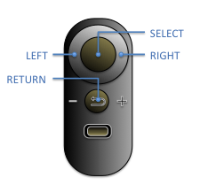

Step 0: Straighten Head on Shoulders
You will observed a ball floating in a black sky through a halo.
Look straight ahead with your head aligned with your body axis.
Tilt your head in pitch and yaw until the ball turns green.
Tilt your head in roll until the halo turns bright green.

When the ball and halo are green, press the Select Button to start.
